دليل تشغيلي مصوّر لفريق الدعم الفنّي في Corbit. يشرح كل أداة في صفحة "بناء البوت" بالخطوات، مع مثال عملي لبناء بوت دعم فنّي كامل من الصفر للنشر، وكيفيّة اختبار كل عقدة قبل التسليم للعميل.
- 4.1 [Trigger — المحفّز](#41-trigger) - 4.2 [Message — رسالة](#42-message) - 4.3 [Buttons — أزرار](#43-buttons) - 4.4 [Condition — شرط](#44-condition) - 4.5 [AI — ذكاء اصطناعي](#45-ai) - 4.6 [Input — إدخال](#46-input) - 4.7 [Transfer — تحويل](#47-transfer) - 4.8 [API — استدعاء خارجي](#48-api) - 4.9 [End — نهاية](#49-end)
من الـ sidebar، اضغط "بناء البوت". ستظهر صفحة "منشئ البوتات":
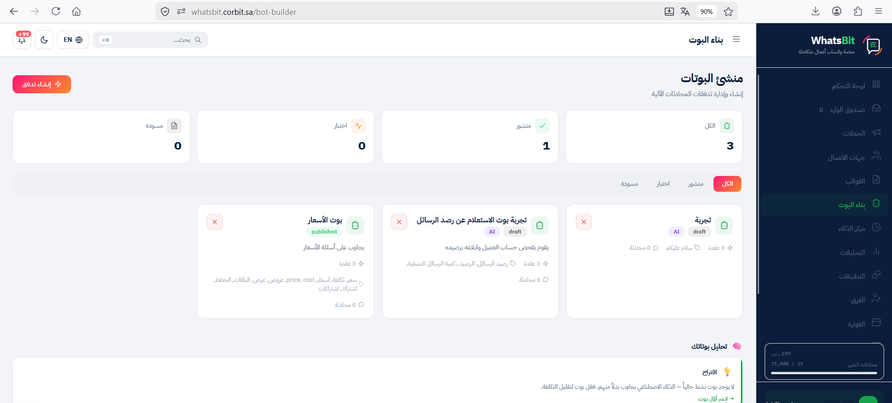
| العنصر | الوظيفة |
|---|---|
| زرّ "+ إنشاء تدفق" | فتح modal بوت جديد (يسار أعلى) |
| Stats Cards (4) | الكل / منشور / اختبار / مسودة — عدّاد سريع لحالات البوتات |
| Tabs | فلتر القائمة حسب الحالة |
| بطاقات البوتات | كل بطاقة تعرض: الاسم، الحالة (published/draft)، AI badge، عدد العقد، عدد المحادثات، الكلمات المحفّزة |
| زرّ ✕ في كلّ بطاقة | حذف البوت (تأكيد قبل الحذف) |
| شريط "تحليل بوتاتك" | اقتراحات AI لتحسين البوتات الموجودة (أسفل الصفحة) |
اضغط "+ إنشاء تدفق" أعلى الصفحة. ستفتح هذه الـ modal:
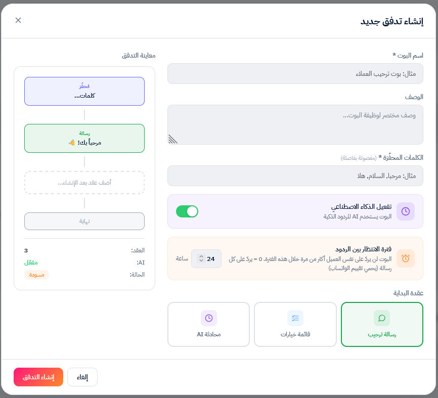
| الحقل | شرح | مثال |
|---|---|---|
| اسم البوت * | عنوان داخلي يظهر للموظّفين فقط | بوت الدعم الفنّي |
| الوصف | ملاحظة للفريق تشرح الغرض (اختياري) | يستقبل طلبات الدعم ويحوّل للفريق المناسب |
| الكلمات المحفّزة * | الكلمات اللي تشغّل البوت، مفصولة بفواصل | دعم, مساعدة, مشكلة, اشكي |
| تفعيل الذكاء الاصطناعي | toggle لتفعيل AI في الفلو (يمكن إضافة AI node لاحقاً) | شغّل لو رح تستخدم AI Node |
| فترة الانتظار بين الردود | Cooldown — الساعات بين تكرار البوت لنفس العميل | افتراضي 24 ساعة. 0 = يردّ على كل رسالة |
| عقدة البداية | الشكل الأوّلي للفلو: ترحيب / أزرار / AI | اختر حسب نوع البوت |
توصية للدعم الفنّي: ابدأ بـ "قائمة خيارات" — هذا النمط الأكثر استخداماً في بوتات الدعم.
بعد إنشاء البوت، يفتح المحرّر:
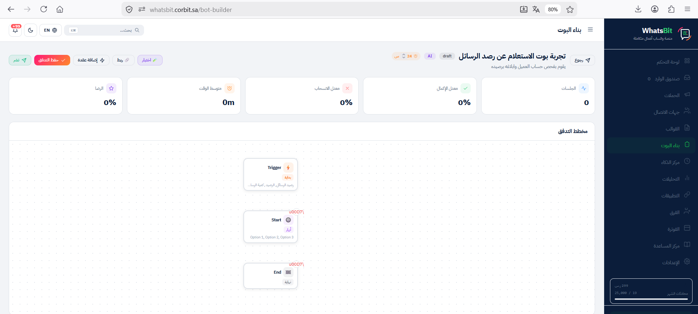
Header علوي (من اليسار لليمين):
عنوان البوت + badges: اسم البوت، الحالة (draft/published)، AI badge، Cooldown (24 س).
Stats Cards (5): الجلسات / معدل الإكمال / معدل الانسحاب / متوسط الوقت / الرضا.
Canvas (المنطقة الكبيرة): الفلو معروض كشجرة عقد متّصلة.
Sidebar إعدادات العقدة (يظهر عند الضغط على عقدة): حقول التعديل الخاصّة بالعقدة المختارة.
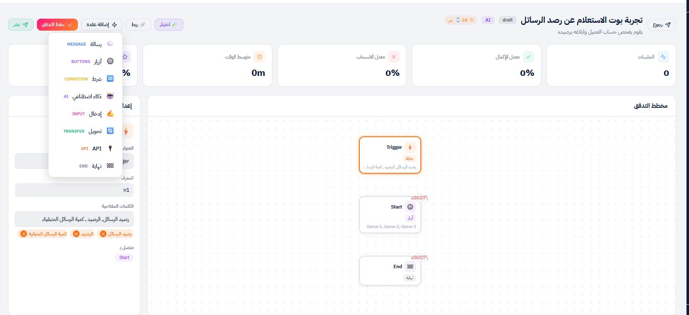
الوظيفة: نقطة دخول البوت. أيّ بوت يبدأ بهذه العقدة فقط.
العدد المسموح: واحدة لكلّ بوت (تُنشأ تلقائياً، لا تظهر في dropdown "إضافة عقدة").
الحقول:
| الحقل | الوصف |
|---|---|
| العنوان | اسم العقدة في الكانفس (افتراضي: Trigger) |
| المعرف | ID فريد للعقدة (لا تعدّله إلّا لو تعرف ما تفعل) |
| الكلمات المفتاحية | قائمة كلمات تشغّل البوت، تظهر كـ tags (اضغط ✕ للحذف) |
| متصل بـ | العقدة التالية في الفلو |
نصائح لكلمات Trigger:
دعم, مساعده, مساعدة, مشكلة).دعم,مساعدة لا دعم , مساعدة).اختبار: في وضع الاختبار، اكتب أيّاً من الكلمات المفتاحية وتحقّق أنّ البوت يبدأ.
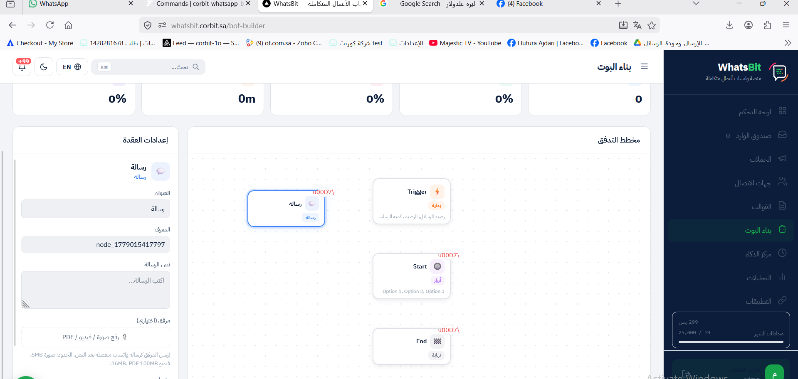
الوظيفة: إرسال نصّ ثابت للعميل (مع مرفق اختياري).
الحقول:
| الحقل | الوصف | الحدود |
|---|---|---|
| العنوان | اسم العقدة في الكانفس | — |
| المعرف | ID فريد | — |
| نص الرسالة | المحتوى المُرسَل للعميل | حدّ واتساب 4096 حرف |
| مرفق (اختياري) | صورة / فيديو / PDF يُرسَل بعد النصّ | صورة 5MB، فيديو 16MB، PDF 100MB |
| متصل بـ | العقدة التالية | — |
نصائح للنصّ:
كتالوج-2026.pdf).اختبار: في وضع الاختبار، أرسل الـ Trigger وتأكّد أنّ النصّ + المرفق يظهران بالترتيب الصحيح.
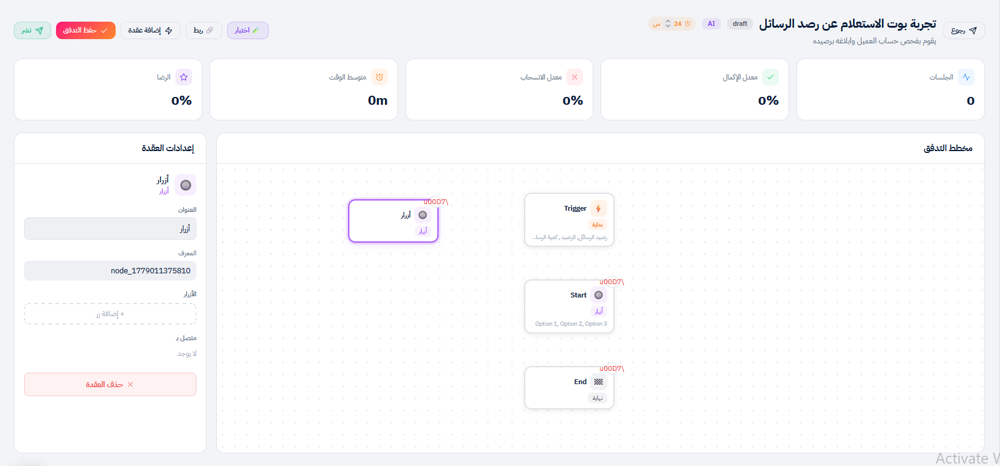
الوظيفة: عرض قائمة أزرار للعميل للاختيار.
الحقول:
| الحقل | الوصف |
|---|---|
| العنوان | اسم العقدة |
| المعرف | ID فريد |
| الأزرار | قائمة نصوص، اضغط "+ إضافة زر" لكل واحد. أقصى 3 أزرار (حدّ واتساب) |
| متصل بـ | كلّ زرّ يُربط بعقدة مختلفة |
القيود المهمّة:
كيف تربط كلّ زرّ بعقدة مختلفة:
اختبار: في وضع الاختبار، تظهر الأزرار كخيارات قابلة للضغط — تأكّد أنّ كل واحد يقود للعقدة الصحيحة.
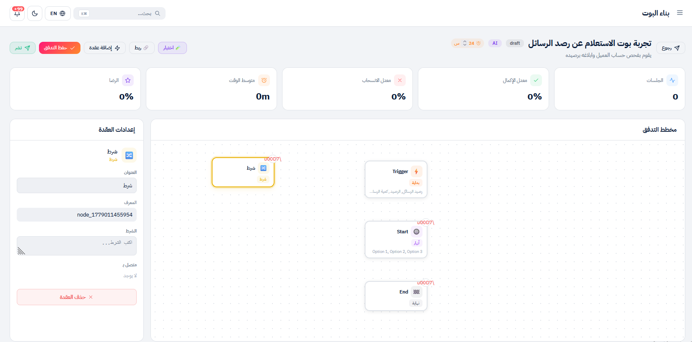
الوظيفة: تفريع المسار بناءً على قيمة متغيّر سابق.
الحقول:
| الحقل | الوصف |
|---|---|
| الشرط | تعبير منطقي يستخدم متغيّرات من عقد Input سابقة |
| متصل بـ | عقد متعدّدة (إحداها لـ "نعم"، أخرى لـ "لا") |
أمثلة على التعابير:
| التعبير | المعنى |
|---|---|
{{score}} >= 80 | الـ score المحفوظ من Input سابق أكبر من أو يساوي 80 |
{{country}} == "SA" | الـ country = "SA" |
{{order_id}} != "" | حقل order_id ليس فارغاً |
نصائح:
{{var_name}}."value".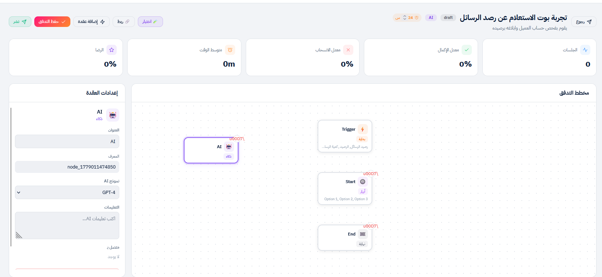
الوظيفة: توليد ردّ ديناميكي عبر AI بناءً على رسالة العميل.
الحقول:
| الحقل | الوصف |
|---|---|
| نموذج AI | dropdown: GPT-4 (افتراضي) |
| التعليمات | system prompt يوجّه AI كيف يردّ |
| متصل بـ | العقدة التالية بعد ردّ AI |
التعليمات — أمثلة:
للدعم العامّ:
أنت مساعد دعم فنّي لشركة Corbit. ردّ بإيجاز واحترافيّة.
لا تخمّن — لو ما عندك إجابة، حوّل العميل لإنسان.
استخدم لغة عربيّة فصحى بسيطة.للمبيعات:
أنت مندوب مبيعات لمنصّة Corbit. اعرض الباقات (Starter/Business/Enterprise)
وأسعارها (299/799/1999 ر.س شهري). اختم بدعوة للاشتراك أو الحجز التجريبي.ملاحظات مهمّة:
اختبار: اكتب أسئلة متنوّعة (متوقّعة + غير متوقّعة) وتحقّق من جودة الردود.
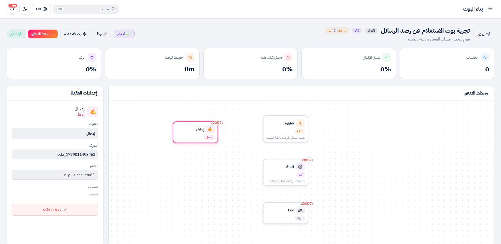
الوظيفة: التقاط ردّ العميل وحفظه في متغيّر لاستخدامه لاحقاً.
الحقول:
| الحقل | الوصف |
|---|---|
| المتغير | اسم لحفظ ردّ العميل فيه (مثلاً user_email, order_id) |
| متصل بـ | العقدة التالية |
كيف يعمل:
استخدام المتغيّر لاحقاً:
مرحباً {{user_email}}{{order_id}} != ""https://api.example.com/orders/{{order_id}}ملاحظة على الـ UI:
نصائح لاسم المتغيّر:
customer_phone, complaint_type, order_id.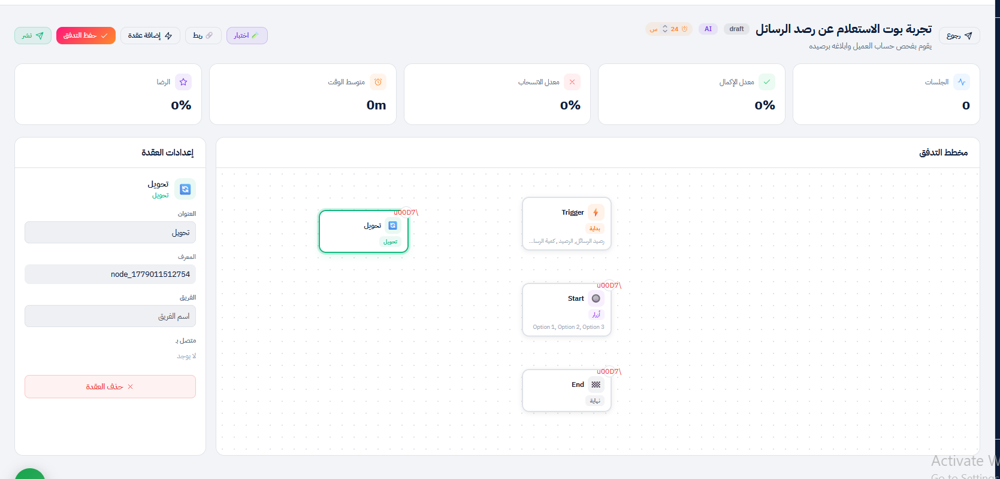
الوظيفة: تحويل المحادثة من البوت لفريق بشري.
الحقول:
| الحقل | الوصف |
|---|---|
| الفريق | اسم فريق مُعرَّف مسبقاً في Settings → Teams |
ما يحدث بعد التحويل:
شرط مهمّ: لازم اسم الفريق مطابق تماماً لاسم في Settings → Teams. إذا الاسم غلط، التحويل يفشل بصمت.
نصائح:
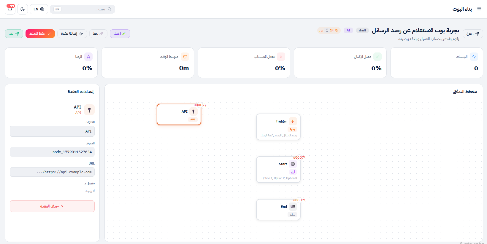
الوظيفة: استدعاء HTTP خارجي لجلب بيانات من نظامك الداخلي.
الحقول:
| الحقل | الوصف |
|---|---|
| URL | عنوان الـ endpoint، يدعم متغيّرات {{var}} |
ملاحظة على الـ UI الحالي:
أمثلة على الاستخدام:
https://shop.example.com/api/orders/{{order_id}}https://crm.example.com/api/customers/{{phone}}/balanceملاحظة فنّيّة: ميزة API Node لا تزال أساسيّة. للحالات المعقّدة، نستخدم Webhook خارجي + AI Node بدل API Node.
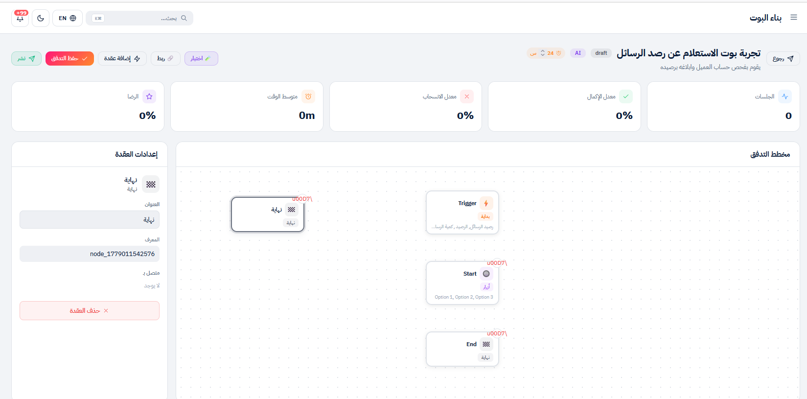
الوظيفة: إنهاء التدفّق. لا حقول.
الحقول:
| الحقل | الوصف |
|---|---|
| العنوان | الاسم في الكانفس (افتراضي: نهاية) |
| المعرف | ID فريد |
| متصل بـ | لا اتّصال بعدها (هي النهاية) |
نصائح:
اضغط "ربط" في الـ header → الزرّ يتحوّل لـ "إلغاء الربط (Esc)" + يظهر banner:
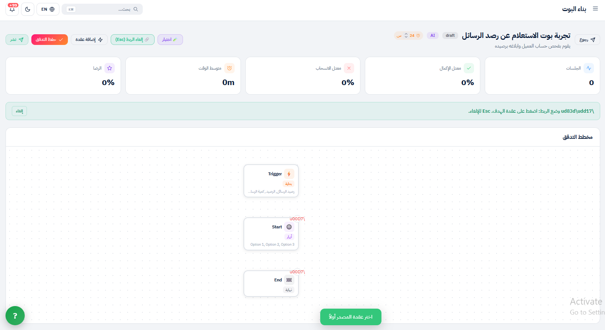
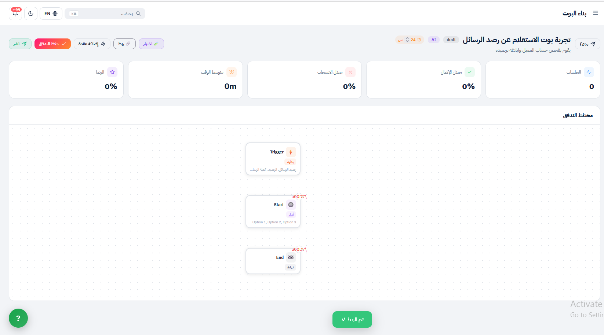
اضغط زرّ Test (يظهر في بعض الإصدارات بجانب نشر). تنفتح لوحة محاكاة:
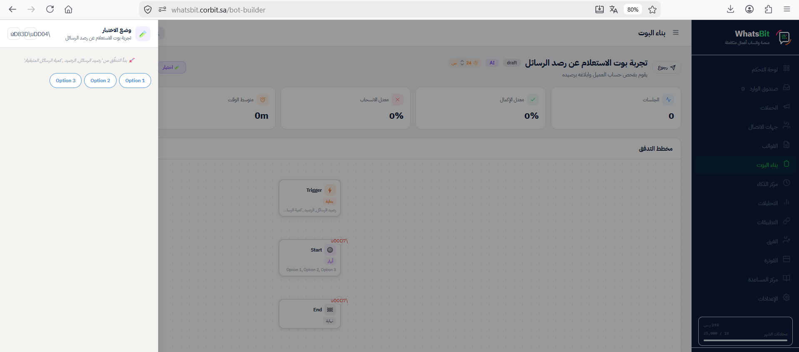
الهدف: بوت يستقبل طلبات الدعم في Corbit، يصنّف العميل، ويحوّله للفريق المناسب.
Trigger (دعم، مساعدة، مشكلة)
↓
Message (ترحيب + توضيح الخيارات)
↓
Buttons (3 خيارات)
├─→ Transfer (دعم فنّي)
├─→ Transfer (مبيعات)
└─→ Transfer (فوترة)في Settings → Teams، عرّف الفرق الـ 3:
الدعم الفنّي — أضف موظّفي الدعم.المبيعات — أضف فريق المبيعات.الفوترة — أضف المحاسبين.من صفحة بناء البوت → اضغط "+ إنشاء تدفق":
بوت الدعم الفنّي - Corbitيستقبل طلبات الدعم ويوجّهها للفريق المناسبدعم, مساعدة, مساعده, مشكلة, اشكي, support, help24 ساعةاضغط "إنشاء التدفق" → ستُنقل لمحرّر التدفّق.
اضغط على عقدة Trigger → في الـ sidebar:
دعم, مساعدة, مساعده, مشكلة, اشكي, support, help (تكون مضافة مسبقاً من الـ modal).اضغط "+ إضافة عقدة" → رسالة:
أهلاً بك في دعم Corbit 👋
كيف نقدر نساعدك؟
اختر القسم المناسب من الأزرار أسفل الرسالة 👇ثمّ اربط Trigger بهذه الـ Message.
اضغط "+ إضافة عقدة" → أزرار:
- دعم فنّي - مبيعات - فوترة
ثمّ اربط Message بـ Buttons.
أضف ثلاث عقد Transfer (كرّر "+ إضافة عقدة" → تحويل ثلاث مرّات):
| العقدة | الفريق |
|---|---|
| Transfer 1 | الدعم الفنّي |
| Transfer 2 | المبيعات |
| Transfer 3 | الفوترة |
اضغط "ربط" في الـ header، ثمّ:
ملاحظة: المنصّة تربط الأزرار بالعقد بترتيب الضغط — الزرّ الأوّل يذهب لأوّل Transfer ربطته، إلخ.
اختبر الـ 3 مسارات:
مسار 1: اكتب دعم → ترحيب → اضغط "دعم فنّي" → تحقّق أنّ المحادثة وصلت لفريق الدعم في Inbox.
مسار 2: اكتب مشكلة → ترحيب → اضغط "مبيعات" → تحقّق أنّ المحادثة وصلت لفريق المبيعات.
مسار 3: اكتب help → ترحيب → اضغط "فوترة" → تحقّق أنّ المحادثة وصلت لفريق الفوترة.
| الحالة | السلوك |
|---|---|
| مسودة (draft) | لا يستجيب للعملاء |
| منشور (published) | فعّال للعملاء |
| اختبار (testing) | متاح للاختبار الداخلي فقط |
اضغط زرّ "نشر" في الـ header. يتحوّل لـ "إيقاف" عند النشر.
من الـ header، اضغط على badge "24 س" → عدّل القيمة (0-72).
التوصيات:
اضغط زرّ "إيقاف" → يرجع لحالة Draft دون حذف. يمكن إعادة التفعيل في أيّ وقت.
× بدل أيقوناتقبل تسليم بوت لعميل، تأكّد من:
الدليل مُحدَّث بتاريخ 2026-05-17 ويعكس واجهة Corbit الفعليّة. لأيّ استفسار، تواصل مع فريق التطوير.